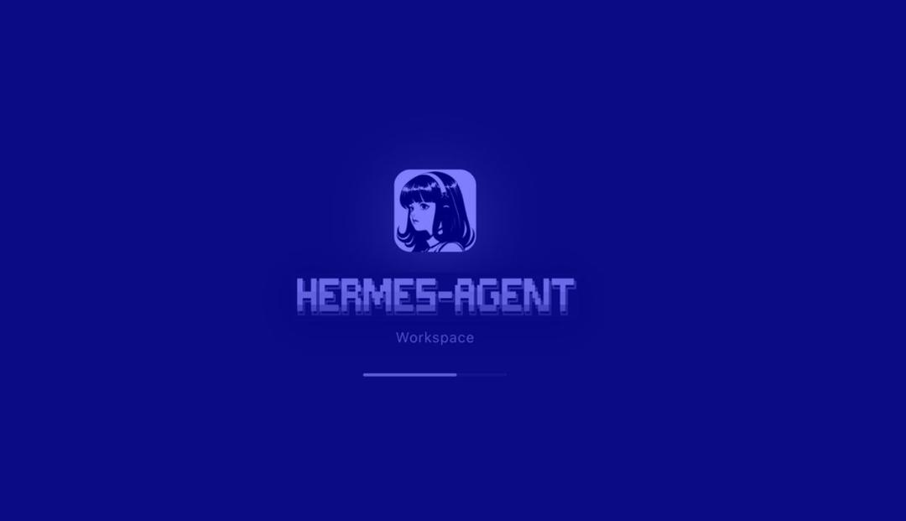

Dikembangkan oleh Nous Research, Hermes Agent adalah framework AI agent open-source yang mampu bekerja mandiri dalam waktu panjang.
Bedanya dari AI biasa? Ia tidak berhenti setelah menjawab satu prompt — ia tetap aktif, menyimpan konteks, dan melanjutkan pekerjaan berikutnya.
Chatbot biasa seperti resepsionis yang menunggu pertanyaan. Hermes Agent? Lebih mirip operator internal yang ikut mengurus banyak hal.
Masalah terbesar AI agent: konteks mudah hilang. Hermes Agent menjawabnya dengan sistem long-term memory yang menyimpan:
Hermes tidak mengunci kamu di satu dashboard. Bisa diakses dari berbagai platform:
Setelah menyelesaikan tugas kompleks, Hermes membuat skill baru secara mandiri — seperti prosedur kerja yang tersimpan rapi.
Contoh:
Minta audit SEO mingguan → setelah beberapa kali, Hermes paham pola → ubah jadi workflow siap pakai.
Semakin lama dipakai, semakin efisien. Tanpa perlu tambah tenaga kerja.
Karena open-source & self-hosted, kamu punya kontrol penuh atas data, API key, dan infrastruktur.
Hermes berjalan sebagai service aktif dalam server atau VPS. Meski laptop mati, browser tertutup — agent tetap bekerja.
Dapatkan update AI, tools, dan insight setiap hari — curated untuk Indonesia
Ikuti @arief.drippython scripts/carousel-capture.py